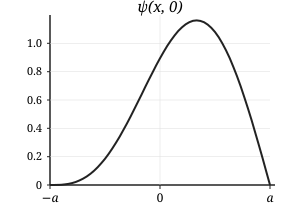
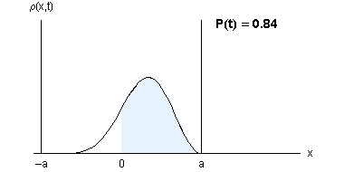

At $t = 0$, an electron is in an infinite potential well of width $2a$ (between $-a$ and $a$) with the wave function:
$$\psi(x,0) = A\!\left(\cos\frac{\pi x}{2a} + \frac{1}{2}\,\sin\frac{2\pi x}{2a}\right)$$

a) Calculate the wave function of the electron at later times.b) How does the probability of finding the electron in the right half of the potential well ($x > 0$) change with time?c) Show that Ehrenfest's theorem holds for the expectation value of momentum.d) Create a simulation of the time dependence of the probability density.
First, I normalize the function:
$$\int_{-\infty}^{\infty} \psi^*\,\psi\;dx = 1 \implies A = \frac{2}{\sqrt{5}}$$
a) Time evolution
Trial solution:
$$\psi(x,\,t) = \sum_{n=0}^{\infty} C_n(t)\;\psi_n(x)$$
where $\psi_n$ are the eigenfunctions for a particle in an infinite potential well. Substituting into the Schrödinger equation: $\;H\psi = i\hbar\,\dfrac{d\psi}{dt}\;$ gives
$$C_n(t) = C_n(0)\;e^{-i\omega_n t}$$
$$\omega_n = \frac{E_n}{\hbar}$$
$$E_n = \frac{\hbar^2\,\pi^2}{2m\,(2a)^2}\;n^2$$
The eigenfunctions are:
$$\psi_1(x) = \frac{1}{\sqrt{a}}\cos\frac{\pi x}{2a} \quad\text{and}\quad \psi_2(x) = \frac{1}{\sqrt{a}}\sin\frac{2\pi x}{2a}$$
The given function is a linear combination of eigenfunctions:
$$\psi(x,0) = \frac{2}{\sqrt{5}}\!\left(\psi_1 + \frac{1}{2}\,\psi_2\right)$$
Its time evolution is:
$$\psi(x,t) = \frac{2}{\sqrt{5}}\!\left(\psi_1\;e^{-i\omega_1 t} + \frac{1}{2}\,\psi_2\;e^{-i\omega_2 t}\right)$$
b) Probability of finding the electron in the right half of the potential well
The probability equals:
$$\int_0^{\infty} \psi^*\,\psi\;dx$$
Introducing a new variable $\;u = \dfrac{\pi x}{2a}\,,\quad du = \dfrac{\pi\,dx}{2a}\,,\quad \Delta\omega = \omega_2 - \omega_1$
$$\int_0^{a} \frac{4}{5a}\!\left(\cos(u)\,e^{-i\omega_1 t} + \tfrac{1}{2}\sin(2u)\,e^{-i\omega_2 t}\right)\!\left(\cos(u)\,e^{i\omega_1 t} + \tfrac{1}{2}\sin(2u)\,e^{i\omega_2 t}\right)du =$$
$$= \frac{8}{5\pi}\!\int_0^{\pi/2}\!\left(\cos^2(u) + \tfrac{1}{4}\sin^2(2u) + \tfrac{1}{2}\cos(u)\sin(2u)\bigl(e^{i\Delta\omega t} + e^{-i\Delta\omega t}\bigr)\right)du = \frac{1}{2} + \frac{16}{15\pi}\cos(\Delta\omega\,t)$$
Probability density:
$$\rho(x,\,t) = \left(\cos^2\!(x) + \frac{1}{4}\sin^2\!(2x) + \frac{1}{2}\cos(x)\sin(2x)\bigl(e^{i\Delta\omega t} + e^{-i\Delta\omega t}\bigr)\right)$$
ANIMATION: The probability density is symmetric in both $x$ and $t$. The probability of finding the particle in the right half of the well oscillates around the value 0.5.

The probability of the electron being in the right half of the potential well:
$$P(0,\,a) = \int_0^{\infty} \psi^*\,\psi\;dx = \frac{1}{2} + \frac{16}{15\,\pi}\cos(\Delta\omega\,t)$$
c) Ehrenfest's theorem
1) $m\,\langle\dot{x}\rangle = \langle p \rangle$
2) $\langle\dot{p}\rangle = -\!\left\langle\dfrac{\partial V}{\partial x}\right\rangle$
I need to show that Ehrenfest's theorem holds for this wave function.
1)
$$\langle x \rangle = \int_{-a}^{a} \psi^*\,x\,\psi\;dx = \frac{128\,a}{45\,\pi^2}\cos(\Delta\omega\,t)$$
$$\langle p \rangle = \int_{-a}^{a} \psi^*\,\frac{\hbar}{i}\,\frac{\partial}{\partial x}\,\psi\;dx = -\frac{16\,\hbar}{15\,a}\sin(\Delta\omega\,t)$$
Differentiating $\langle x \rangle$ and multiplying by mass $m$, I confirm the theorem holds.
2)
$$|\psi(\pm a,\,t)|^2 = \frac{\pi^2}{5\,k_0^2\,a^3}\left|e^{-i\omega_1 t} \pm e^{-i\omega_2 t}\right|^2$$
$$|\psi(a,\,t)|^2 - |\psi(-a,\,t)|^2 = \frac{4\,\pi^2}{5\,k_0^2\,a^3}\cos(\Delta\omega\,t)$$
$$\left\langle -\frac{\partial V}{\partial x}\right\rangle = \lim_{V_0 \to \infty}\!\left(V_0\!\int \psi^*(x)\bigl(\delta(x+a) - \delta(x-a)\bigr)\psi(x)\,dx\right) =$$
$$= -\frac{2\,\pi^2\,\hbar^2}{5\,m\,a^3}\cos(\Delta\omega\,t)$$
$$\langle\dot{p}\rangle = -\frac{16\,\hbar}{15\,a}\,\Delta\omega\cos(\Delta\omega\,t) = -\frac{2\,\pi^2\,\hbar^2}{5\,m\,a^3}\cos(\Delta\omega\,t)$$